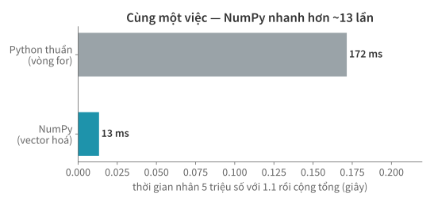
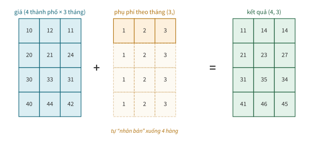
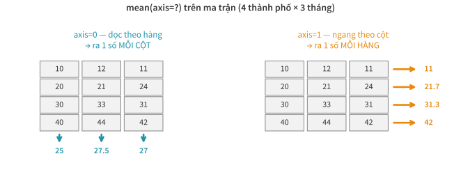

Học kì 1, năm học 2026–2027
Viện Trí tuệ nhân tạo, Trường ĐH Công nghệ, ĐHQGHN
for qua từng dòng dữ liệu — dừng lại".Buổi này công cụ thao tác cả triệu con số bằng một lệnh.
Vòng for Python không được thiết kế cho hàng triệu con số.

import numpy as np
gia = np.array([1200000, 950000, 2400000, 610000])
gia.dtype, gia.shape, gia.ndim
(dtype('int64'), (4,), 1)
Ba thuộc tính định danh một mảng: dtype (kiểu chung), shape (kích thước từng chiều), ndim (số chiều).
Từ list, từ công thức, hoặc từ bộ sinh số ngẫu nhiên.
np.array([[1, 2, 3], [4, 5, 6]]) # từ list (lồng nhau -> 2D)
np.arange(0, 10, 2) # dãy cách đều: 0 2 4 6 8
np.zeros((3, 4)) # khung rỗng chờ điền
Kèm họ hàng: linspace (chia đều đoạn), ones, full.
rng = np.random.default_rng(seed=42) # seed = tái lập được!
gia_gia_lap = rng.normal(1000, 250, size=5).round()
gia_gia_lap
array([1076., 740., 1188., 1235., 512.])
Khi chưa có dữ liệu thật, bạn có thể sinh dữ liệu giả để thử pipeline — và ghim seed để ai chạy cũng ra đúng những con số ấy (yêu cầu tái lập của bài tập lớn).
diem = np.array(["7.5", "8.0", "9.25"]) # đọc từ CSV: toàn chuỗi!
diem.dtype
dtype('<U4')
diem.astype(float).mean()
8.25
astype là cách đổi kiểu cho cả mảng. Chưa đổi kiểu thì
mean() trên mảng chuỗi chỉ báo lỗi.
doanh_thu_12_thang = np.arange(1, 13)
theo_quy = doanh_thu_12_thang.reshape(4, 3) # 4 quý × 3 tháng
theo_quy
array([[ 1, 2, 3],
[ 4, 5, 6],
[ 7, 8, 9],
[10, 11, 12]])
reshape không copy dữ liệu — nó chỉ đổi cách "đọc" khối nhớ. Tổng số
phần tử phải khớp (4 × 3 = 12).
Viết phép toán cho "cả mảng" như cho một con số.
gia = np.array([1200, 950, 2400, 610]) # nghìn đồng
gia_sau_phi = gia * 1.15 + 50 # thêm 15% phí + 50k dọn dẹp
gia_sau_phi
array([1430. , 1142.5, 2810. , 751.5])
Không for, không append — công thức viết một lần,
áp cho mọi phần tử. Đây chính là vector hoá.
gia > 1000
array([ True, False, True, False])
(gia > 1000).sum(), (gia > 1000).mean()
(2, 0.5)
Ghi nhớ: sum trên mảng bool = đếm;
mean = tỷ lệ.
gia_tho = np.array([1200, -5, 950, 0, 2400])
gia_tho[gia_tho > 0] # giữ dòng nào mặt nạ = True
array([1200, 950, 2400])
Bài 2 lọc bằng comprehension, buổi này lọc bằng mặt nạ bool — nhanh hơn, và là cú pháp bạn dùng trong pandas.
hop_le = (gia_tho > 0) & (gia_tho < 2000)
gia_tho[hop_le]
array([1200, 950])
&, |, ~ và
ngoặc quanh từng vế. Viết and/or là
ValueError — lỗi kinh điển khi bắt đầu dùng pandas.
nhan = np.where(gia > 1000, "cao", "bình dân")
nhan
array(['cao', 'bình dân', 'cao', 'bình dân'], dtype='<U8')
Một dòng thay cho cả vòng for + if/else —
gán nhãn phân khúc hay gắn cờ QA đều dùng đúng pattern này.

gia_4tp_3thang = np.array([[10, 12, 11],
[20, 21, 24],
[30, 33, 31],
[40, 44, 42]])
phu_phi_thang = np.array([1, 2, 3])
(gia_4tp_3thang + phu_phi_thang)[0] # hàng đầu: 10+1, 12+2, 11+3
array([11, 14, 14])
Quy tắc nhớ nhanh: hai shape khớp nhau khi mỗi chiều bằng nhau hoặc một bên là 1 (so từ phải sang).
Một ma trận, hai hướng tổng hợp.
gia = np.array([1200, 950, 2400, 610, 980])
gia.mean(), np.median(gia), gia.std().round(1)
(1228.0, 980.0, 615.6)
mean ≫ median là dấu vết của giá trị kéo đuôi (căn hộ 2400) — hiện tượng quen thuộc của dữ liệu giá; buổi 10 sẽ khai thác kỹ.

gia_4tp_3thang.mean(axis=0) # giá TB mỗi THÁNG (gộp 4 thành phố)
array([25. , 27.5, 27. ])
gia_4tp_3thang.mean(axis=1) # giá TB mỗi THÀNH PHỐ (gộp 3 tháng)
array([11. , 21.7, 31.3, 42. ])
Ghi nhớ: axis nào bị nêu tên, chiều đó biến mất khỏi kết quả.
thang = np.array(["T9", "T12", "T3"])
gia_tb_thang = np.array([25.0, 27.5, 27.0])
thang[gia_tb_thang.argmax()]
'T12'
max trả giá trị; argmax trả vị trí —
rồi dùng vị trí đó tra ngược sang mảng khác. Cặp bài trùng khi trả lời "tháng nào, phòng nào".
gia = np.array([1200, np.nan, 950])
gia.mean(), np.nanmean(gia)
(nan, 1075.0)
mean() trả NaN
chính là tín hiệu cảnh báo.nanmean chủ động bỏ qua — bạn quyết định, không phải ngẫu nhiên.None (bài 2) → np.nan (bài này) →
pd.NA (bài sau): một khái niệm, ba cách biểu diễn.
gia = rng.lognormal(7, 0.5, size=10_000) # phân phối giá "lệch phải"
np.percentile(gia, [50, 95, 99]).round()
array([1089., 2493., 3561.])
"Giá vượt P99" là quy tắc gắn cờ ngoại lai phổ biến — buổi 10 bạn sẽ tự đề xuất ngưỡng và bảo vệ nó.
Cạm bẫy bài 2 phiên bản NumPy.
M = gia_4tp_3thang # (4 thành phố × 3 tháng)
M[0] # hàng đầu (thành phố 1)
array([10, 12, 11])
M[:, 1] # cột 1 (tháng thứ hai, mọi thành phố)
array([12, 21, 33, 44])
M[1, 2] # một ô
24
Đọc M[hàng, cột]; dấu : = "lấy hết chiều này".
hang_dau = M[0] # view — nhìn chung khối nhớ với M
hang_dau[0] = 999
M[0]
array([999, 12, 11])
M[0].copy(). Triệu chứng "dữ liệu gốc tự nhiên đổi"
gần như luôn do view — pandas sẽ còn cảnh báo bạn về nó
(SettingWithCopyWarning).
gia = np.array([1200, 950, 2400, 610, 980])
top2 = gia.argsort()[-2:][::-1] # vị trí 2 giá cao nhất
top2, gia[top2]
(array([2, 0]), array([2400, 1200]))
Đưa mảng chỉ số vào ngoặc vuông để lấy nhiều phần tử tuỳ ý trong một lần (kết quả là copy, không phải view).
where) đều chạy cả mảng;
bool mask để lọc, & | ~ để ghép.axis: chiều nào bị gọi tên, chiều đó biến mất; NaN xử lý chủ động
bằng họ nan*..copy().mean thay nanmean hoặc ngược lại mà không hỏi bạn);
broadcasting "chạy được" nhưng ghép nhầm chiều — kết quả sai không báo lỗi.
shape của kết quả: đúng chiều mong đợi chưa? Sai chiều = sai nghĩa.